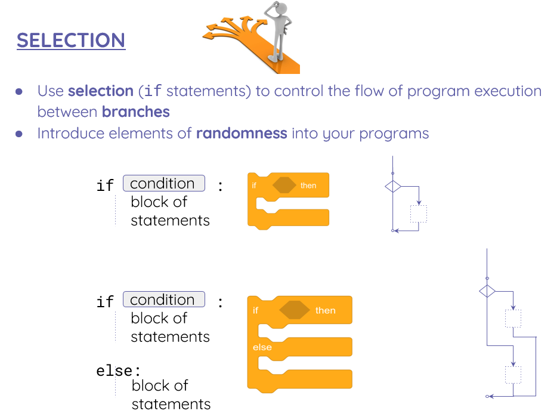

Page 7 of 7 · draft
Selection
Extra challenge. This page is not required — try it if you have finished everything else and want more.

VIDEOTUTORIAL: https://classroom.thenational.academy/lessons/at-a-crossroads-cgwkac
Activities
10Activity 10
MY GRADE: User will type his grade and the progam will answer with a grade letter.
Your Grade is A: 9-10
Your Grade is B: 8-9
Your Grade is C: 7-8
Your Grade is D: 6-7
Your Grade is E: 5-6
I'm sorry, your grade is F: less than 5
11Activity 11
TEMPERATURE: Write a Python program to read temperature in centigrade and display a suitable message according to temperature state below
Temp < 0 then Freezing weather
Temp 0-10 then Very Cold weather
Temp 10-20 then Cold weather
Temp 20-30 then Normal in Temp
Temp 30-40 then Its Hot
Temp >=40 then Its Very Hot
Example : user writes --> 42
Expected Output: Its very hot.